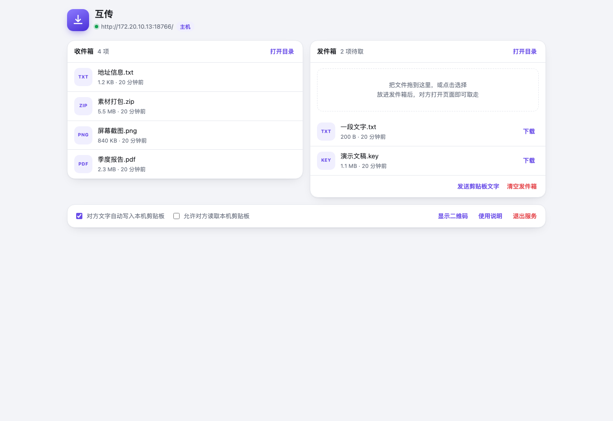
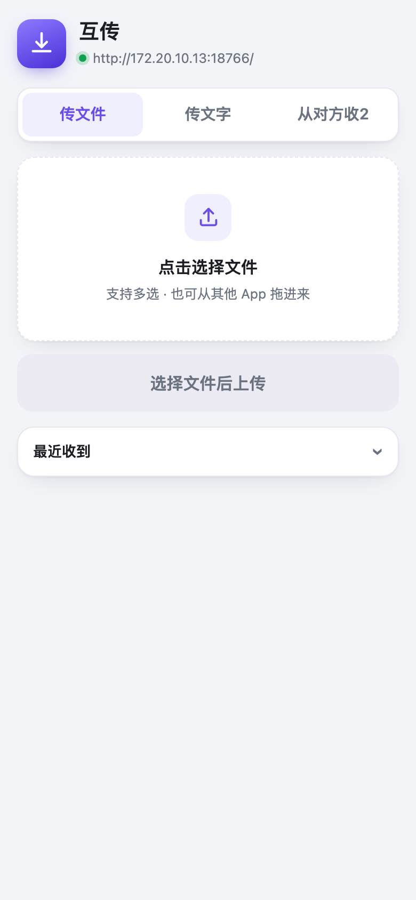

手机、电脑之间文件和文字双向直传：同一 Wi-Fi 内点对点，不用数据线，不用云盘，不经过任何服务器。Mac、Windows、Linux 都能当主机，任何带浏览器的设备都能当访客。
整套系统只有两个角色，读完这一段就能上手：
| 角色 | 是谁 | 做什么 |
|---|---|---|
| 主机 跑服务的一端 |
装了本应用的 Mac，或跑了 start.bat / start.sh 的 Windows / Linux 电脑 |
开一个局域网服务；收文件进收件箱；把要发出去的东西放进发件箱等对方来取 |
| 访客 开网页的一端 |
任何能开浏览器的设备：安卓 / iOS 手机、平板、另一台电脑。什么都不用装 | 用浏览器打开主机的地址：上传文件、发文字给主机；取走主机放进发件箱的内容 |
访客 → 主机 访客浏览器 ──上传／粘贴──▶ 接收服务 ──▶ 收件目录 ~/Downloads/android-inbox
主机 → 访客 主机放进发件箱 ──等待取件──▶ 访客页面点「下载」／「复制全文」所有流量只走局域网，不出网、不注册、不登录。页面上显示的主机名、平台、目录都是动态取自服务端的 —— 主机是 Mac、Windows 还是 Linux，文案自动跟着变。
| 平台 | 启动方式 | 说明 |
|---|---|---|
| macOS | 双击「FileRelay.app」 | 不占 Dock，菜单栏右侧出现一个彩色磁贴小图标。后台服务随之启动 |
| Windows | 双击 start.bat |
自动找 py -3 或 python（需 Python 3.8+，安装时勾选 Add Python to PATH）。关闭窗口即停止服务 |
| Linux / macOS 终端 | ./start.sh |
自动找 python3（3.8+）。前台运行，Ctrl+C 停止 |
启动横幅会打印两条地址：本机控制台（http://127.0.0.1:端口/）和局域网地址（给其他设备用）。端口默认 8765，被占用自动顺延，以横幅和运行时信息为准。
用主机自己的浏览器打开 http://127.0.0.1:端口/，页面会自动切换成控制台视图 —— 主机的操作台：

127.0.0.1 这类本机地址生效 —— 其他设备（包括同一 Wi-Fi 里的电脑）访问局域网地址时，看到的仍是普通互传页，打不开控制台，也碰不到「退出服务」「打开目录」这些本机操作。局域网里的另一台电脑要传文件，直接用互传页就行：上传、发文字、收发件箱全都能用。
Mac 版额外有一套菜单栏，日常高频操作不用开浏览器：
| 菜单项 | 作用 |
|---|---|
| 显示二维码 | 弹出原生窗口显示二维码 + 当前局域网地址。换 Wi-Fi 后地址会自动刷新 |
| 发送剪贴板文字到手机 | 把 Mac 剪贴板里的文字放进发件箱，对方页面刷新后就能看到并复制 |
| 发送文件到手机… | 弹出文件选择框（可多选），选中的文件会出现在对方的收件列表里 |
| 打开发送目录 | 打开发件箱目录。往里拖文件＝发送，连菜单都不用点 |
| 清空发件箱… | 删掉还没被取走的内容。对方已下载的副本不受影响 |
| 待发 N 项 · 对方在线／离线 | 一眼看到还有多少东西等着取，以及对方页面当前是否连着 |
| 打开接收目录 | 在 Finder 中打开收件目录 |
| 复制接收地址 | 把地址复制到剪贴板，方便手动发给对方 |
| 最近接收 | 显示最后一次收到的内容与时间，每 2 秒自动刷新 |
| 自动写入收到的文字 | 默认开启。对方发来的文字直接进 Mac 剪贴板——手机上复制、Mac 上 Cmd+V 就完事 |
| 允许对方读取本机剪贴板 | 默认关闭。开启后对方页面的「对方剪贴板」栏目即可一键读取（与控制台里的开关等价，两边任一即可） |
| 服务端口 | 显示实际在用的端口。默认 8765，被占用时自动顺延，这里能看到换成了哪个 |
| 使用说明 / 退出 | 打开本手册 / 退出应用并停掉后台服务 |

「从对方收」页签（按主机名动态显示）列出对方放进发件箱的全部内容；有东西没取时，页签上显示红色数字角标。
发件箱是「主机主动发来的东西排队等取」，而剪贴板是主机此刻手上正拿着的，所以不进队列、不留档 —— 点一次拿一次。
~/Downloads/android-inbox（Windows 即 %USERPROFILE%\Downloads\…；下载目录被 OneDrive 等重定向时，以启动横幅打印的实际路径为准）photo(1).jpg），不覆盖clipboard.log，每条带时间戳分隔；同时按开关决定是否进主机剪贴板。记录只滚动保留最近 200 条，更早的自动丢弃 —— 传文字常含验证码、密码这类临时内容，不该永久留在盘上。主机可随时在控制台页底「清空文字记录」或菜单栏「清空文字记录…」一键清空__last.json，供菜单栏/控制台显示「最近接收」，可忽略~/Downloads/android-outbox。要发的东西都先放这儿等对方来取；对方点「收下并清空」后自动删除，超 24 小时没人取也会自动清理，队列上限 200 项~/.androidtransfer/flags/，记录两个剪贴板开关的状态，可忽略~/.androidtransfer/runtime，记录实际端口、进程号与访问地址。服务退出时自动删除，可忽略| 现象 | 原因与解决办法 |
|---|---|
| 访客打不开页面 | 依次确认：① 两端在同一个 Wi-Fi（别一个连 5G 一个连访客网络）；② 路由器没开「AP 隔离 / 客户端隔离」；③ 主机防火墙没拦传入连接（Windows 首次启动弹的防火墙询问必须点「允许访问」——点了取消后 127.0.0.1 仍能打开，看起来"服务正常"，实则局域网全断） |
| 提示端口被占用 / 端口不是 8765 | 不用管。服务会自动顺延到下一个可用端口（8765 → 8766 → …），横幅、二维码、「复制接收地址」用的都是实际端口。功能完全不受影响 |
| Mac：双击提示「已损坏」或「来自身份不明的开发者」 | 网络传输的应用会被打上隔离属性，执行一次即可：xattr -dr com.apple.quarantine "/Applications/FileRelay.app" |
| Mac：Finder 里图标还是旧的 | 系统图标缓存未刷新。在 访达 中执行 killall Finder，或把应用拖到桌面再拖回 |
| 收不到系统通知 | macOS：到 系统设置 → 通知 找到本应用，打开「允许通知」。Linux：确认装了 notify-send（多数发行版自带）。Windows：个别精简系统弹窗不显示，不影响传输本身 |
| 收到的文件找不到 | 以启动横幅里打印的实际收件目录为准 —— 下载文件夹被 OneDrive 等重定向的系统，服务会自动尝试备选位置 |
| 发件箱里的文件一直留着 | 正常，它在等对方来取。对方点「收下并清空」后立即删除；不点的话超过 24 小时自动清理（上限 200 项）。也可随时手动清空 |
| 文字发过去了，主机剪贴板里没有 | 检查「自动写入收到的文字」开关（Mac 在菜单栏、其他平台在控制台页底，打勾＝开启）。关掉后文字仍会存进 clipboard.log（滚动保留最近 200 条），只是不进剪贴板 |
| 访客点「读取」说还没允许 | 这个开关默认关闭，必须先在主机上放行（见「读主机此刻的剪贴板」）。放行后再点一次「读取」即可，不用重启服务 |
| 「读取」显示「剪贴板现在是空的」 | 如实反馈 —— 主机此刻的剪贴板确实没有文本。剪贴板里若是图片或文件，本应用只处理文字，显示为空 |
| 安卓下载时提示「文件可能有害」 | 安卓 Chrome 对非 HTTPS 地址下载的例行提示，选「仍然下载」即可。局域网自建服务拿不到可信证书，这条提示绕不过去 |
| 点「复制全文」没反应 | 浏览器不允许非 HTTPS 页面用新版剪贴板接口，应用会自动退回兼容方式；万一也被拦，按钮会变成「请长按上方文字手动复制」 |
| 换了 Wi-Fi 后地址失效 | 正常。重新打开二维码即可，它每次都读当前地址 |
8765）。8766、8767… 最多向后探 20 个，取第一个能真正绑上的。~/.androidtransfer/runtime；二维码、访问地址一律以它为准。PORT=9000 ./start.sh # 首选端口；被占用自动顺延
PORT_SPAN=5 ./start.sh # 限制顺延范围（只允许 8765～8769）
INBOX=… OUTBOX=… ./start.sh # 自定义收件 / 发件目录
OUTBOX_TTL=86400 OUTBOX_MAX=200 ./start.sh # 发件箱保留秒数 / 队列上限Windows 用 set PORT=9000（或 PowerShell 的 $env:PORT=9000）后再跑 start.bat。Mac 的 .app 里这些值写在启动器 Contents/MacOS/AndroidTransfer 中，右键 → 显示包内容即可编辑。
TOKEN=auto ./start.sh # 首次自动生成口令并记住，重启不变默认同一 Wi-Fi 下任何设备都能上传。开启口令后，二维码和「复制接收地址」都会自动带上 ?token=…，访客扫码即可，无需手动输入。开启后发件箱的读取和下载同样受口令保护。
系统设置 → 通用 → 登录项，点「+」加入「FileRelay.app」。Win+R 输入 shell:startup，给 start.bat 建一个快捷方式放进去。start.sh，或按发行版惯例写 systemd user unit。每台电脑各自跑一份就好 —— 两台可以都用 8765 端口，因为 IP 不同：
TOKEN 口令，避免同网段其他人上传文件或读走你发出去的内容。127.0.0.1 生效，「打开目录」「退出服务」这类本机操作无法被局域网里的其他设备调用。Ctrl+C / 控制台「退出服务」），服务随之停止，不留后台进程。start.bat 窗口；Linux Ctrl+C。/Applications 拖到废纸篓。Windows / Linux：删除项目目录即可。~/Downloads/android-inbox、~/Downloads/android-outbox）。~/.androidtransfer（运行时信息与开关文件目录）。